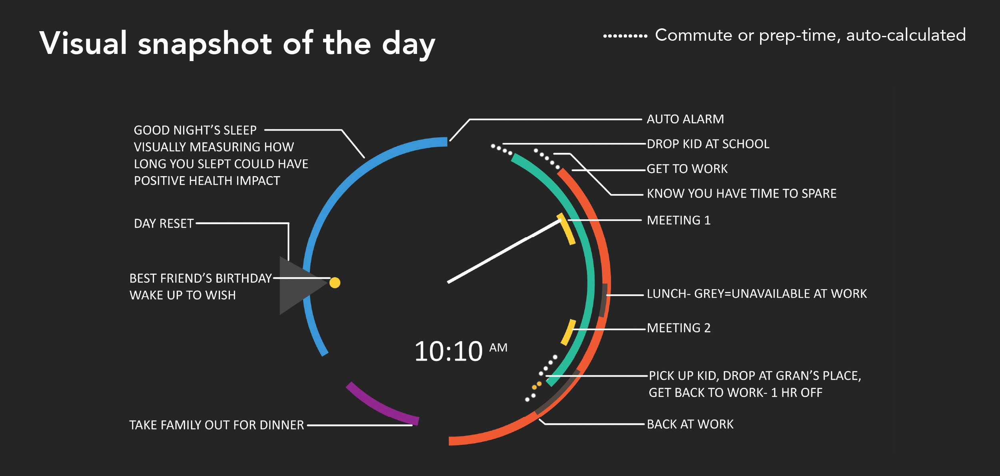

Calendar-based Time Display
What is the real question on our minds when we look at the time? We're not simply interested in the numbers that show on our watches, but the derived meaning is always with reference to some events, a context that's unique to every person. And this context of what the time means, is directly linked to one's event calendar.

Can there be a visual connection between the event schedule, and the watch dial itself? Can we have a glanceable, snapshot view of our day, as the context to the question "what time is it?"
Thinking about the calendar day, juxtaposed against the 12 hour dial we are used to, led me to read up a little about the history of clocks, the history of devices to measure time.

There seemed to be two simple ways to put 24 hours on the dial - either all 24 across the 360°, or inner and outer rings of 12 hours each.
This is an exploration of a visualisation of key calendar information on the watch dial, to make it more meaningful.

Added some intelligent features, such as computed times for commute, waiting time, etc.
Explorations with varying degrees of detail:


More than the convenience, how would it affect our relationship with time if we saw our day visualised like this?

Could this help us make more conscious decisions about how we spend our time?
It is still my top candidate for a hobby project. If you're a developer and find this interesting, hit me up, would love to collaborate and see if this works.